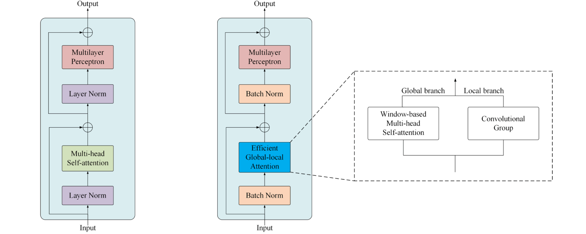
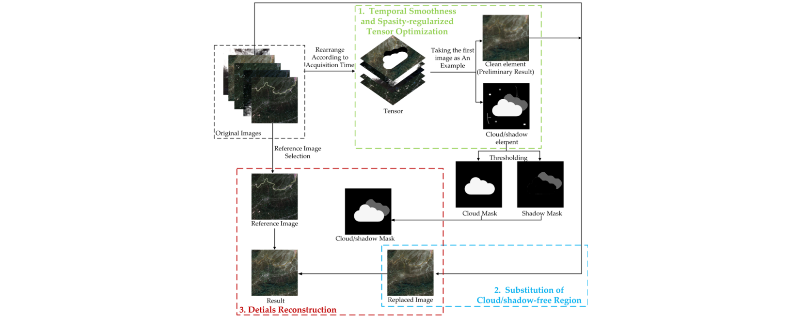

|
Rui Li (李 睿) |
News
- [2022.11] One co-author paper is selected as an ESI Highly Cited Paper (Top 1%) !
- [2022.10] One co-author paper is accepted by IEEE GRSL (link) !
- [2022.08] One paper is accepted by ECM (link) !
- [2022.07] One paper is accepted by Energy (link, video) !
- [2022.07] One paper is selected as an ESI Highly Cited Paper (Top 1%) !
- [2022.06] One paper is accepted by ECC 2022 (link) !
- [2022.06] One co-author paper is accepted by IEEE TGRS (link, code) !
- [2022.06] One co-author paper is accepted by ISPRS P&RS (link, code) !
- [2022.05] One paper is selected as an ESI Hot Paper (Top 0.1%) !
- [2022.05] Three papers are selected as ESI Highly Cited Paper (Top 1%) !
- [2022.01] One paper is selected as an ESI Highly Cited Paper (Top 1%) !
- [2022.01] One co-author paper is accepted by IEEE GRSL (link) !
- [2022.01] One paper is accepted by IJRS (link, code) !
- [2021.12] One co-author paper is accepted by RS (link) !
- [2021.11] One paper is accepted by GSIS (link, code) !
- [2021.09] One paper is accepted by ISPRS P&RS (link, code) !
- [2021.08] One corresponding author paper is accepted by JGGS (link, code) !
- [2021.07] One co-author paper is accepted by RS (link, code) !
- [2021.06] One paper is accepted by IEEE TGRS (link, code) !
- [2021.03] One paper is accepted by IEEE GRSL (link, code) !
- [2021.01] One paper is accepted by IEEE GRSL (link, code) !
- [2020.10] Awarded with The National Scholarship for Postgraduates (研究生国家奖学金) !
- [2020.10] One co-author paper is accepted by RS (link) !
- [2020.02] One paper is accepted by RS (link, code) !
- [2019.11] One paper is accepted by 计算机应用研究 (link) !
Research Interest
My research interests lie in trans-disciplinary applications of deep learning methods, especially for image processing, computer vision and renewable energy. I have authored more than 15 peer-reviewed articles in international scientific journals such as ISPRS P&RS (IF=11.774), IEEE TGRS (IF=8.125), ECM (IF=11.533) and Energy (IF=8.857), which have been cited 200+ times indexed by the Web of Science with the h-index of 9. Five of my first-authored papers have been selected as the ESI Highly Cited Paper (Top 1%) and one as the ESI Hot Paper (Top 0.1%). Currently, my research topics include:
- Deep Learning for Semantic Segmentation
- Land Cover and Land Use Classification
- Attention Mechanism in Deep Learning
- Transformer for Computer Vision
- Thick and Thin Cloud Removal
- Offshore Renewable Energy
Education
- 2021.10-Now Ph.D. candidate in School of Engineering, University of Warwick
- 2019.09-2021.06 M.E. in School of Remote Sensing and Information Engineering, Wuhan University
- 2015.09-2019.06 B.E. in School of Automation Science and Engineering, South China University of Technology
Publications
Wind Farm Wake Modeling:
|
Multi-Fidelity Modeling of Wind Farm Wakes Based on A Novel Super-Fidelity Network R. Li, J. Zhang and X. Zhao. Energy Conversion and Management (SCI Q1 Top, IF=11.533) [Link] [PDF] [BibTeX] |
|
Dynamic Wind Farm Wake Modeling Based on a Bilateral Convolutional Neural Network and High-Fidelity LES Data R. Li, J. Zhang and X. Zhao. Energy (SCI Q1 Top, IF=8.857) [Link] [PDF] [Video] [BibTeX] |
Attention Mechanism:
Vision Transformer:
Semantic Segmentation: Hyperspectral Image Classification: Cloud Removal:
Others:
Conference:
ABCNet: Attentive Bilateral Contextual Network for Efficient Semantic Segmentation of Fine-Resolution Remote Sensing Images
R. Li, S. Zheng, C. Zheng, C. Duan, L. Wang and P. M. Atkinson.
ISPRS Journal of Photogrammetry and Remote Sensing (SCI Q1 Top, IF=11.774)
[Link]
[PDF]
[Code]
[BibTeX]
[ Citations: 20+]
Multiattention-Network for Semantic Segmentation of Fine-Resolution Remote Sensing Images
R. Li, S. Zheng, C. Zhang, C. Duan, J. Su, L. Wang and P. M. Atkinson.
IEEE Transactions on Geoscience and Remote Sensing (SCI Q2 Top, IF=8.125)
[Link]
[PDF]
[Code]
[BibTeX]
[ Citations: 35+]
Multistage Attention ResU-Net for Semantic Segmentation of Fine-Resolution Remote Sensing Images
R. Li *, S. Zheng, C. Duan, J. Su and C. Zhang.
IEEE Geoscience and Remote Sensing Letters (SCI Q2, IF=5.343)
[Link]
[PDF]
[Code]
[BibTeX]
[ Citations: 20+]

UNetFormer: An UNet-like Transformer for Efficient Semantic Segmentation of Remote Sensing Urban Scene Imagery
L. Wang, R. Li, C. Zheng, S. Fang, C. Duan, X. Meng and P. M. Atkinson.
ISPRS Journal of Photogrammetry and Remote Sensing (SCI Q1 Top, IF=11.774)
[Link]
[PDF]
[Code]
[BibTeX]
Building Extraction with Vision Transformer
L. Wang, S. Fang, and X. Meng and R. Li.
IEEE Transactions on Geoscience and Remote Sensing (SCI Q2 Top, IF=8.125)
[Link]
[PDF]
[Code]
[BibTeX]
A Novel Transformer based Semantic Segmentation Scheme for Fine-Resolution Remote Sensing Images
L. Wang, R. Li, C. Duan, C. Zhang, X. Meng and S. Fang.
IEEE Geoscience and Remote Sensing Letters (SCI Q2, IF=5.343)
[Link]
[PDF]
[BibTeX]
[ Citations: 15+]
Transformer Meets Convolution: A Bilateral Awareness Network for Semantic Segmentation of Very Fine Resolution Urban Scene Images
L. Wang †, R. Li †, D. Wang, C. Duan, T. Wang and X. Meng.
Remote Sensing (SCI Q2 Top, IF=5.349)
[Link]
[PDF]
[Code]
[BibTeX]
Class-Guided Swin Transformer for Semantic Segmentation of Remote Sensing Imagery
X. Meng †, Y. Yang †, L. Wang, T. Wang, R. Li and C. Zhang.
IEEE Geoscience and Remote Sensing Letters (SCI Q2, IF=5.343)
[Link]
[PDF]
[BibTeX]

A2-FPN for Semantic Segmentation of Fine-Resolution Remotely Sensed Images
R. Li, L. Wang, C. Zhang, C. Duan and S. Zheng.
International Journal of Remote Sensing (SCI Q3, IF=3.531)
[Link]
[PDF]
[Code]
[BibTeX]
Land Cover Classification from Remote Sensing Images Based on Multi-Scale Fully Convolutional Network
R. Li, S. Zheng, C. Duan, L. Wang and C. Zhang.
Geo-spatial Information Science (SCI Q3, IF=4.278)
[Link]
[PDF]
[Code]
[BibTeX]
[ Citations: 10+]
MACU-Net for Semantic Segmentation of Fine-Resolution Remotely Sensed Images
R. Li †*, C. Duan †, S. Zheng, C. Zhang and P. M. Atkinson.
IEEE Geoscience and Remote Sensing Letters (SCI Q2, IF=5.343)
[Link]
[PDF]
[Code]
[BibTeX]
[ Citations: 20+]
Scale-Aware Neural Network for Semantic Segmentation of Multi-resolution Remote Sensing Images
L. Wang, C. Zhang, R. Li, C. Duan, X. Meng and P. M. Atkinson.
Remote Sensing (SCI Q2 Top, IF=5.349)
[Link]
[PDF]
[BibTeX]

Classification of Hyperspectral Image Based on Double-Branch Dual-Attention Mechanism Network
R. Li *, S. Zheng, C. Duan, Y. Yang and X. Wang.
Remote Sensing (SCI Q2 Top, IF=4.848)
[Link]
[PDF]
[Code]
[BibTeX]
[ Citations: 100+]
A Deep Double-Channel Dense Network for Hyperspectral Image Classification
K. Wang, S. Zheng, R. Li * and L. Gui.
Journal of Geodesy and Geoinformation Science 测绘学报英文版
[Link]
[PDF]
[Code]
[BibTeX]

Thick Cloud Removal of Remote Sensing Images Using Temporal Smoothness and Sparsity Regularized Tensor Optimization
C. Duan, J. Pan and R. Li.
Remote Sensing (SCI Q2 Top, IF=4.848)
[Link]
[PDF]
[BibTeX]
R-YOLO: A Real-Time Text Detector for Natural Scenes with Arbitrary Rotation
[2] X. Wang, S. Zheng, C. Zhang R. Li and L. Gui.
Sensors(SCI Q3, IF= 3.847)
[Link]
[PDF]
[BibTeX]
视觉—语言—行为:视觉语言融合研究综述
李睿, 郑顺义, 王西旗.
计算机应用研究 (中文核心, IF=1.140)
[Link]
[PDF]
[BibTeX]
Deep Learning-based Wind Farm Power Prediction using Transformer Network
R. Li, J. Zhang and X. Zhao.
2022 European Control Conference (EI, Oral)
[Link]
[PDF]
[BibTeX]
† Equal Contribution * Corresponding Author ESI Highly Cited Paper ESI Hot Paper
Journal Reviewer
Awards